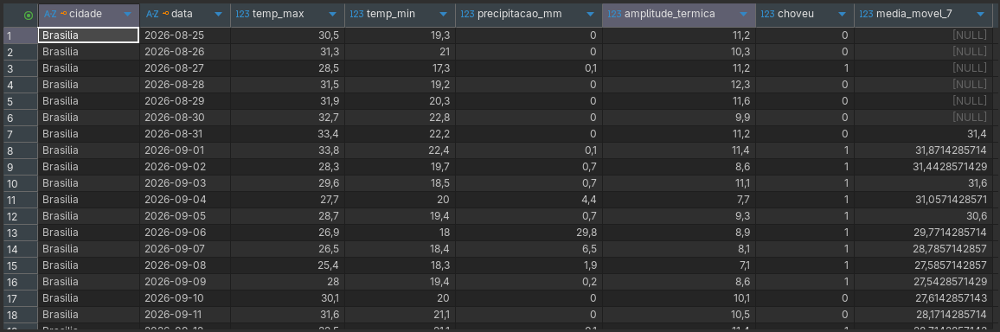
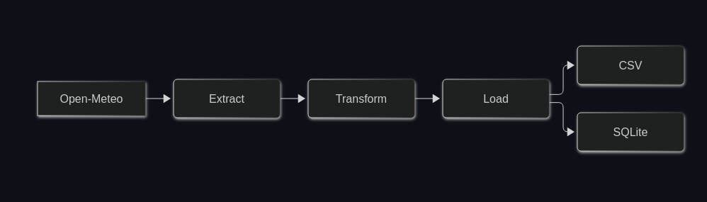

Open-Meteo ETL
Pipeline que extrai temperatura e precipitação históricas de cinco cidades pela API Open-Meteo, calcula amplitude térmica e média móvel de 7 dias, marca se choveu e grava tudo em CSV e SQLite.
Evita duplicatas usando cidade e data como chave composta, tanto no banco quanto no CSV.




- Python
- Pandas
- SQLite
- API REST
- ETL